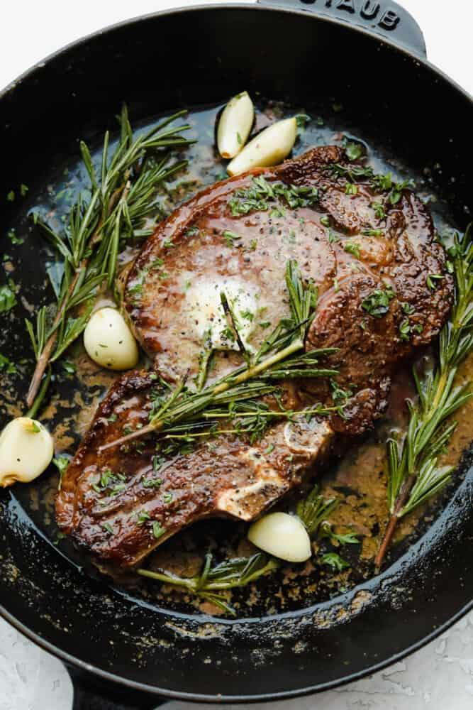

Ingredients
- Steak (my steak of choice is ribeye)
- Butter
- Garlic cloves
- Desired seasonings
- Rosemary sprigs (optional)
Description
This recipe is a game-changer for any steak lover. Start by searing a well-seasoned steak in a hot skillet until it gets that perfect, crispy crust. Then, you add a generous amount of butter along with some garlic and fresh herbs. As the butter melts, you spoon it over the steak, letting all those flavors soak in.
The result? A steak that’s juicy on the inside with a rich, buttery flavor and a deliciously crispy outside. It’s like having a fancy steakhouse meal right at home.
Steps
- Season steak with desired seasonings
- Heat drizzle of oil in pan on med/high
- Sear sides of steak for 2 minutes each
- Lower heat to med/low and add butter, garlic, and rosemary(optional)
- Baste steak with butter for additional 3-4 minutes for med-rare (time will varry by steak thickness)
- Remove steak and allow to rest 5 minutes, then serve
Notes
- Following these steps will yield a perfect steak everytime in under 15 minutes!
Storage
- Store in an airtight container in the fridge for up to 4 days.